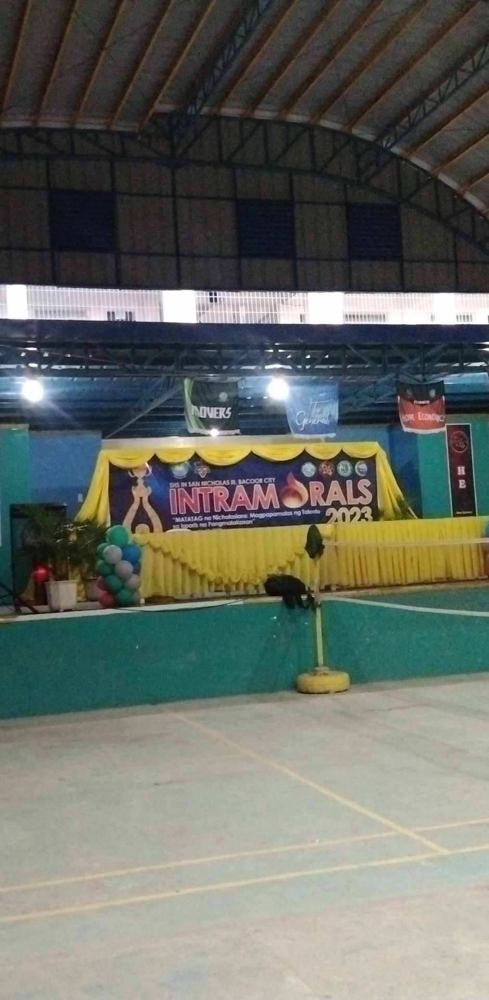
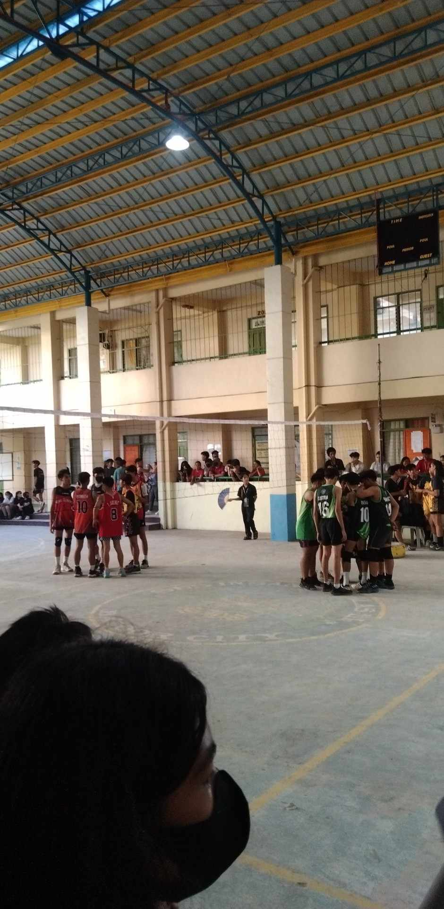
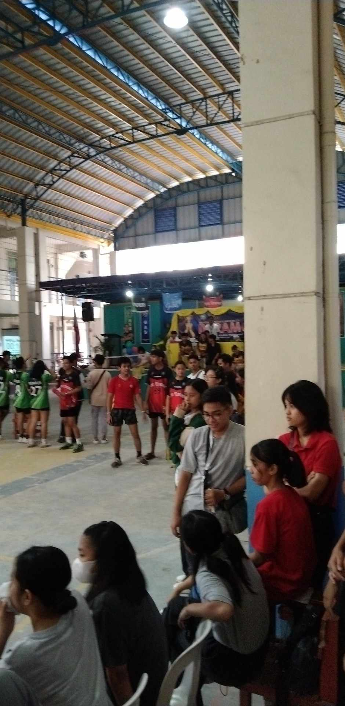
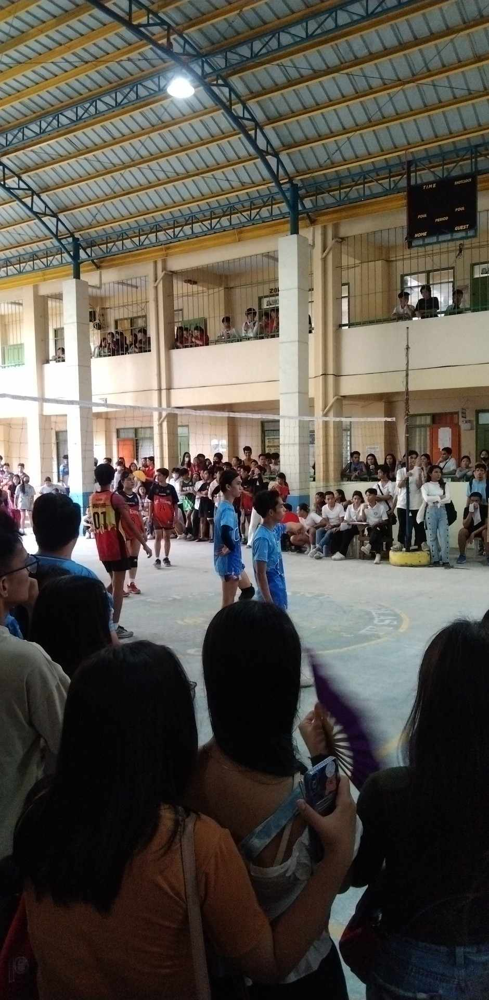
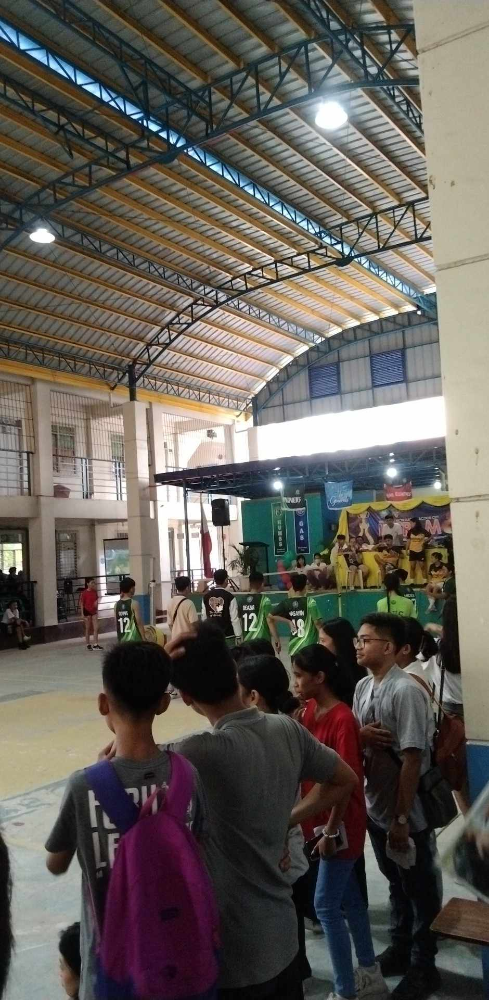

activity 3
Athiya Prenciona
INTRAMURALS
WHAT IS INTRAMURALS?
Intramurals encourage school-wide involvement of all students in physical activity during non-instructional times
that occur during the school day. Quality intramurals are student-focused, inclusive, fun events or activities that maximize
physical activity participation for all students.
WHAT IS YOUR REFLECTION ABOUT SPORTS?
Sports is my way of challenging my body and myself. There is great joy being on a team oriented sport and a more individual sport track.
Playing a mix of sports expands my skill set and keeps things interesting.
TYPES OF SPORTS IN INTRAMURALS




